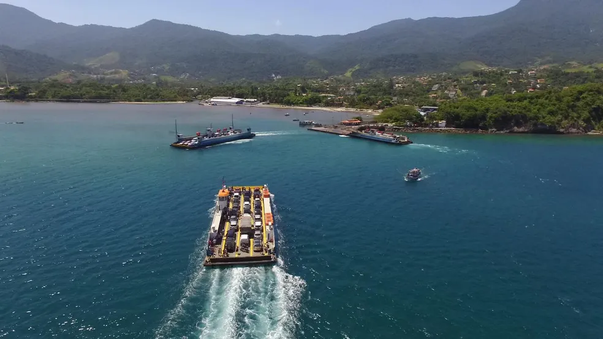

Agende a travessia
Com o Hora Marcada você garante o horário e não entra na fila comum.

Fala, galera! Tô vendo como está a fila…
A travessia em tempo real, na palma da sua mão. Veja as filas de São Sebastião e Ilhabela antes de sair de casa.
Motoristas e passageiros mostram em tempo real como está cada lado. O semáforo junta as fotos dos últimos 30 minutos e as esperas medidas pelo GPS de quem passou pela fila.
Mapas do Waze: ruas em vermelho e amarelo indicam lentidão no acesso à balsa. Os alertas vêm dos motoristas do Waze.
Carregando…
Espera prevista hora a hora para os próximos 7 dias, com o vento na travessia. Fica mais precisa a cada espera medida no site.
Carregando…
Previsões são estimativas do VAIDEBALSA, não informação oficial. Confira sempre os canais oficiais da travessia.
Planeje a travessia: vento forte e mar agitado podem atrasar a balsa.
Carregando previsão…
Farmácias, postos, guincho, saúde e outros serviços essenciais dos dois lados. Lista gratuita, sem anúncio.
Os dois lados do canal num lugar só. Escolha o embarque e confira antes de pegar a estrada.
Paga só na ida, no embarque em São Sebastião. A volta de Ilhabela não é cobrada.
R$ 28,50 aos sábados, domingos e feriados
R$ 14,20 aos sábados, domingos e feriados
Pedestres e ciclistas não pagam a travessia
Com o Hora Marcada você garante o horário e não entra na fila comum.
Sexta à tarde na ida e domingo à tarde na volta são os horários mais cheios, ainda mais em feriado. Veja o melhor horário e os feriados.
Vento forte e mar agitado podem atrasar a operação. Confira o painel aqui em cima antes de sair.

Nos feriados e fins de semana, nosso apresentador mostra como está a travessia, dá dicas para fugir da fila e avisa quando a balsa está tranquila.
Em breve no InstagramO agendamento é feito no sistema oficial Hora Marcada, do governo do estado.